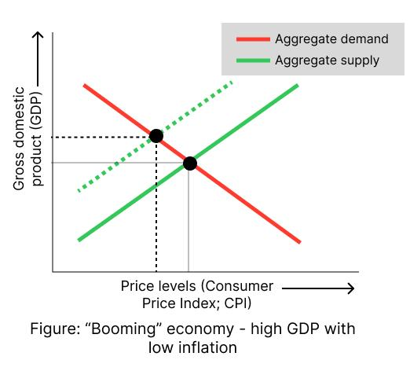

Making Castles in the Air: How Econ 101 Butchers Math - Part 1
- tags
- #Economics #Mathematics #Mathematical Modelling #Symmetry
- published
- reading time
- 13 minutes
Using Symmetry to Expose the Fraud Poster Child of Economics
Whenever we hear of the term “economics”, the first picture that comes to mind is that of money. The second picture, if you’ve been put through at least some sort of formal economic education as in high schools, is the famous supply-and-demand curves. They’re the ubiquitous poster-child of the field of economics, the same as $E = mc^2$ or the apocryphal “apple falling on Sir Isaac’s head” in the field of physics. Despite the provocative title, I know and appreciate these models within their scope of usage, and the intent of this essay remains more mathematical than economical. As a noneconomist, I don’t really know how much they’re used in advanced economic work, but in public discourse of economic policymaking, they have proven so far to be invaluable assets, shedding light on everything starting from local egg prices and the exchange rates in a forex market to economic policymaking on a global level. Yet its mathematical underpinnings seem woefully underexplored. This essay will be an outsider’s journey into attempting to formalize the immensely influential yet rather nebulous hand-wavy tools. The goal is, at the very least, to serve as a good demo of how simple mathematical principles and “gut feelings”, pursued with determination, can lead to delightfully pleasant results. My starting point into the attack will be to a simple and seemingly reasonable hypothesis: the supply curve can be viewed as a demand curve for money from the seller’s perspective. But first, let’s review a bit about the classical model and see where it shines rather dazzlingly.
The Econ 101 Model of Supply and Demand
Laws of Supply and Demand
First up, we should introduce the model we’re trying to critique to a reasonable extent. As the price of an object goes up, the demand for it goes down, and its supply goes up. At any random price $p$, the seller will be willing to supply an amount $s$ of goods, while the buyer will demand an amount $d$. If $ d > s $, we need to boost the supplies, and so the price goes up a bit to make the sellers supply at $ s’ = d $, at which point they both agree on the price of the exchange, and the amount of goods to be transferred. Similarly, if $ d < s $, then the sellers drive the price down so that the supply is in locksteps with the demand, and where they meet is the equilibrium price of goods - this is a point at which the demand and the supply are such that no price modifications are necessary. All this is packaged into a neat little “universal” law - the law of supply and demand.
The Graphical Summary
Now comes the fun part. The laws of supply and demand are neat, but putting them up on a graph is sleek. Here’s what it looks like.
The x-axis shows the price, labelled $p$, while the y-axis shows the quantity of the good demanded or supplied, labelled $q$. The downsloping (red) line shows the quantity demanded at different prices, while the upsloping (green) line shows the quantity supplied at different prices. They intersect at the black point, labelled $(p_\text{equilibrium}, q_\text{equilibrium})$ (I know that most econ sources put the prices on the y axis and the quantity on the x axis, but I believe the quantity is usually a function of the price, so I placed the price on the x axis). This means that the demand-side forces, which tend to bring the traded quantity of goods down as price rises, and the supply-side forces, which tend to push the quantity up, balance each other out at this point, where the buyers and the sellers both agree to exchange $q_\text{equilibrium}$ units of good (say 10 cups of chocolate cold coffee) at price $p_\text{equilibrium}$ (say BDT 500). As illustrated in the next figure, any higher a price, and sellers will want to sell more than buyers want to buy, and so will eventually have to bring the price down to let the demand crawl up to meet the supplies at the equilibrium price. Any lower a price, the demand will exceed the amount that the sellers can supply, and hence will drive prices up towards the equilibrium.
Shifting Market Forces
As supply-side forces change to increase supplies (e.g. due to, say, innovations that make production much cheaper), the sellers will want to sell more of a good at the same price.This means a leftward shift of the supply curve. This new, shifted supply curve is depicted by the dashed line in the figure. As you can see, as supply goes up, price must go down. In a similar fashion, when demand goes up (i.e. the demand curve shifts rightwards), the price goes up, and vice versa.
Explanatory Power of the Model
Any model in science (I’m sure to have triggered any natural scientist in the audience by my audacity to call econ a “science”, but it truly is one whether its practitioners make it look so or not) has a realm (or scope) of applicability, and is judged by the explanatory power it offers within said realm. This model is incredibly powerful, so here is an example case to illustrate that this actually is a rather illuminating model for its scope of usage.
Case Study: Diagnosing Diseases in State Economy
The above figure illustrates a supply-and-demand curve for the enitre economy of a state as a whole. A weighted average of overall price levels of goods in the economy, called Consumer Price Index or CPI, is mapped onto the x-axis. Note that since the x-axis denotes the (weighted) average price, rising “prices” on this graph indicates inflation. The total quantity of goods exchanged throughout the entire economy is just the GDP of the country, so the y-axis, instead of quantity, now shows the GDP. The downsloping red line shows the aggregate demand, i.e. the total quantity of goods demanded by all the people in the economy at a given price level. Similarly, the upsloping green line shows the aggregate supply - how the quantity of goods supplied by all the people changes across different price levels. Here’s how this helps us to diagnose health problems for the state economy. We have 4 possible changes of market dynamics to consider - increased aggregate demand, decreased aggregate demand, increased aggregate supply, and decreased aggregate supply. We consider each in sequence.
Case 1 - Increased Aggregate Demand
Aggregate demand, the combined demand for goods of all the people in the economy, will rise when there is more money circulating in the economy. This money creation may or may not be coupled with an increase in actual production of the economy. Since in these examples we’re considering one variable at a time, we take the aggregate supply curve to be unchanged - i.e. the circulating money does not come from an increase in production level. So when the aggregate demand curve shifts rightwards, there is a higher equilibrium price level (i.e. inflation), and a higher GDP. This rise in GDP is due to government policy of printing more money, and while this generates growth and jobs on the short-term, in the long run this only hurts the economy as the rising prices are not backed by rising value production. This is called an overheating economy - the increased purchasing power is not balanced by an increased value-production in the economy. In simple terms, people have more money yes, but almost exactly the same amount of things to buy as before, so it isn’t really economic growth in real terms. This is shown in the graph below, where the dotted line represents the shifted demand curve.
Case 2 - Decreased Aggregate Demand
In this case, the aggregate demand curve shifts to left, and the newe equilibrium point has both a lower GDP, and a lower inflation. This is an economic recession. Lowered GDP means higher unemployment, and the lowered price levels indicate that people in general are not interested in consuming because of the unemployment. This was illustrated most recently during the pandemic when widespread unemployment led to a widespread demand-shock, which led to a global economic recession.
Case 3 - Decreased Aggregate Supply
This is the worst case scenario for an economy. Think of it like an economy that’s been diagnosed with cancer. There is a widespread supply shock that leads to decreased production throughout the economy. But since the demand is relatively unchanged, that means prices will rise, as you can see in the graph from the dotted line representing the shifted supply curve. With a double-whammy of low GDP (i.e. stagnated GDP) and high inflation, the economy falls into what’s called stagflation, also known as the economist’s nightmare.
Case 4 - Increased Aggregate Supply
I saved the best for the last. This is an absolute economic utopia - high GDP, low inflation. This is a booming economy, one where value generation is occurring at a high level, so everybody has not only more money, they also have more stuff to buy with that money.

Let the Floodgates Open!
Okay, ’nuf said about the pros of the old model. Let’s dive into where it goes wrong from a mathematical standpoint.
The Asymmetry of Money and Other Goods
Traditional economic models, rather implicitly, assign money a fundamentally different quality than other goods. This may not always be visible, but if we take the time to work out the math, money does turn out to be very specially treated.
The “Principle of Transactional Relativity”
Let’s think about an economic exchange from the perspective of a seller in a coffee shop, instead of the traditional method of looking from a buyer’s perspective. The seller supplies goods, and demands money in return. In fact, to an alien, for all he knows, he could see the transaction and think, “that guy is buying those flat sheets with those dark looking liquids”. This means that when we are selling something, we can think of the transaction as a purchasing of money in exchange for goods, rather than selling of goods in exchange for money. In other words,
There are no privileged “reference frames” in economic transactions.
This means that the supply curve for the seller can equally well be viewed as a demand curve for money, where the goods the “seller” gives to the “buyer” are the “money-price”. This principle, in essence, is highly reminiscent of the principle of relativity enunciated in 1905 by the great Albert Einstein, so I’ve taken to calling it the principle of transactional relativity, but I also like calling it simply the principle of transactional symmetry. Now, if this principle is right, the supply curve of the seller for coffee should transform into a typical-looking demand curve.
Formally Defining the Symmetry
I’ll skip over basic coordinate geometry and assume it to be known that a downsloping straight line can be represented by $y = b - mx$ and an upsloping one by $y = b + mx$. Now, we need to give mathematical form to the principle of transactional relativity, and see if it works out.
-
First of all, let us define the “good-price”, a.k.a. “price” in common parlance. The good-price is the amount of money a person has to pay their transactional partner to obtain a single unit of good. In other words, $$p = \frac{m}{q} \quad (1)$$ where $p$ = good-price, $m$ = the amount of money paid in the transaction, and $q$ = the quantity of goods exchanged.
-
Now we define the “money-price”. This is simply the amount of goods that someone “buying money”, i.e. selling some good, needs to pay to obtain each unit of money. So we have, $$p_m = \frac{q}{m}$$ where the new symbol $p_m$ = money-price. Combining with the previous definition of good-price, we have, $$ {p_m = \frac{1}{p} \quad (2)} $$ Equation $(2)$ defines one part of our symmetry transformations that tells us how to obtain the transformed price axis. This is the price of money to put in the x-axis of the money-demand curve. Now onto the transformed “quantity of money” axis.
-
On the y-axis, where we plot the quantity of a good demanded in a transaction by a buyer, we need now to plot the quantity of money demanded in the transaction. While at first glance this may seem to be just plain-old good-price, it actually is not - good-price tells us the amount of money demanded by the seller per unit of good sold. That means that the total amount of money demanded by the seller in a transaction is $${q_m = M = p \times q \quad (3)}$$ as per equation $(1)$, where $q_m$ = quantity of money.
Equations (2) and (3) define the complete transformations that codify the principle of transactional symmetry. They can be used to transform any equation in the good-space (i.e. the 2-dimensional space where the x-axis shows good-prices, $p$, and the y-axis shows good-quantities, $q$) into an equation in the money-space (i.e. the 2-dimensional space where the x-axis shows money-prices, $p_m$, and the y-axis shows money-quantities, $q_m$).
$$ \text{\large Principle of Transactional Symmetry} $$
$$ \boxed{ \large p_m = \frac{1}{p} } $$ $$ \boxed{ \large q_m = pq } $$
Using the Symmetry to Transform the Supply Curve into a Money-Demand Curve
For those who have experience with linear algebra, you should immediately appreciate that the transactional symmetry transformation is a non-linear transformation, and hence it should not map straight lines to straight lines. In other words, we can expect that transactional symmetry, which tells us to expect that the money-demand curve would after transformation look like a run-of-the-mill demand curve, does NOT hold for the traditional model. But for the uninitiated, we proceed with transforming the good-space supply equation for coffee into a money-space money-demand equation. The original supply equation is an upsloping straight line, $$q = c + kp,$$ where $k$ is the slope of the supply curve, and $c$ the intercept, both constants. Performing the appropriate substitutions, we arrive at the following abomination:
$$ \frac{q_m}{p} =\frac{k}{p_m} + c $$ $$ \Rightarrow q_m p_m = c + \frac{k}{p_m} $$
Finally, after rearranging, we get the classical model’s money-demand: $$ \text{\large Money-demand in the Classical Model} $$ $$ \boxed{q_m = \frac{c}{p_m} + \frac{k}{p_m^2}} $$
And the resulting curve, for parameters c and k both set to equal 1, looks like… (drum rolls)
This is NOWHERE near what we expected, that is, a downsloping straight line!
This is closer to an exponential curve than anything else. This tells us one of two things - either the principle of transactional symmetry is invalid, or the linear-form supply and demand curves are nothing but PURE FRAUD.
Ways forward
As alluded to in the previous paragraph, our pursuit of symmetry has now led us to a fork in the road, and we must choose where to go from here. Assuming you, like myself, prefer staying in the comfort of your home while you do all your mathematical explorations, I take it that you too would agree that experimenting is not an option under consideration, not at least at this point. We could try coming up with an experimental design that would enable us to draw supply and demand curves for various goods including money itself, but if you’re anything like myself, you’d agree that unless we’ve seen this theoretical thread to its very logical end where logic alone can no longer help us proceed, resorting to experiments would be a cop-out.
So under these constraints, there is only one possible way for us to take - we call the classical model out on its bullshit and take the mathematical route. We assume the validity of the principle of transactional symmetry, and work out what sort of supply and demand curves respect that symmetry. And after we’ve worked that out, we’ll see if the resulting curves make sense empirically, possibly turning to an experimental study eventually. But for now, if you’ve read it this far, let’s call it a day and rest and recharge. We’ll continue with our pursuit the next time, in shaa Allah. Till then, thank you and goodbye!